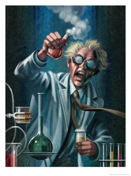

My Ideal is Me
My admirable qualities:
Brilliance
Erudition
Becoming modesty
My staggering accomplishments:
Universal field theory
Post-structural literary criticism
Concert pianist
Brahams
Beethoven
Tennis champion
Wimbledon
French Open
Dr. Felix von Manderpootz
